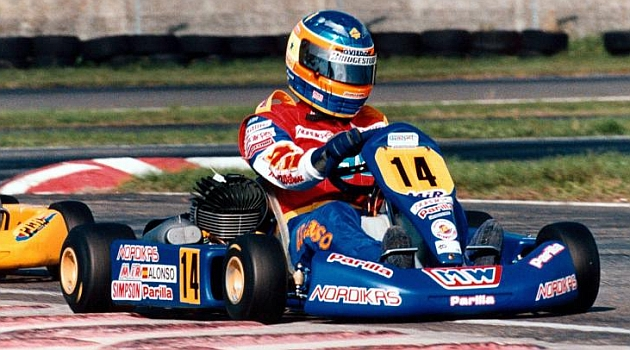

Fernando Alonso

Small Bio
Fernando Alonso Díaz (born 29 July 1981) is a Spanish racing driver who won the Formula One World Championship
in 2005 and 2006 for the Renault team. He is often regarded as one of the greatest Formula One drivers in the
history of the sport. He has contested 17 seasons of Formula One. Outside Formula One, Alonso won the 2018–19
FIA World Endurance Championship with Toyota Gazoo Racing. He won the 24 Hours of Le Mans twice, in 2018 and
2019, and the 24 Hours of Daytona once in 2019.
Racing record
- 1996–1997: Karting
- 1998: Spanish Formula Nissan
- 1999: Euro Open by Nissan
- 2000: Formula 3000
- 2001: Minardi (Formula One)
- 2002–2006: Renault (Formula One)
- 2007: McLaren (Formula One)
- 2008–2009: Renault (Formula One)
- 2010–2014: Ferrari (Formula One)
- 2015–2018: McLaren (Formula One)
- 2018–2019: Toyota (WEC)
- 2020: Renault (Formula One)
Complete Formula 1 Teams
- 2001: Minardi PS01
- 2002: Renault R202
- 2003: Renault R23
- 2004: Renault R24
- 2005: Renault R25
- 2006: Renault R26
- 2007: McLaren MP4-22
- 2008: Renault R28
- 2009: Renault R29
- 2010: Ferrari F10
- 2011: Ferrari 150° Italia
- 2012: Ferrari F2012
- 2013: Ferrari F138
- 2014: Ferrari F14 T
- 2015: McLaren MP4-30
- 2016: McLaren MP4-31
- 2017: McLaren MCL32
- 2018: McLaren MCL33
- 2020: Renault R.S.20